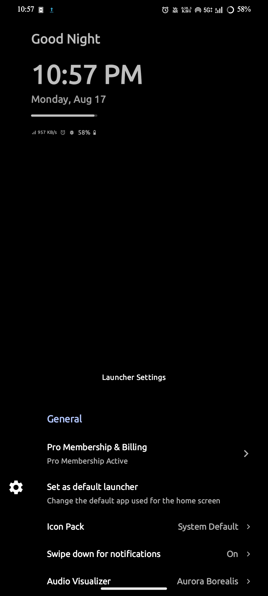
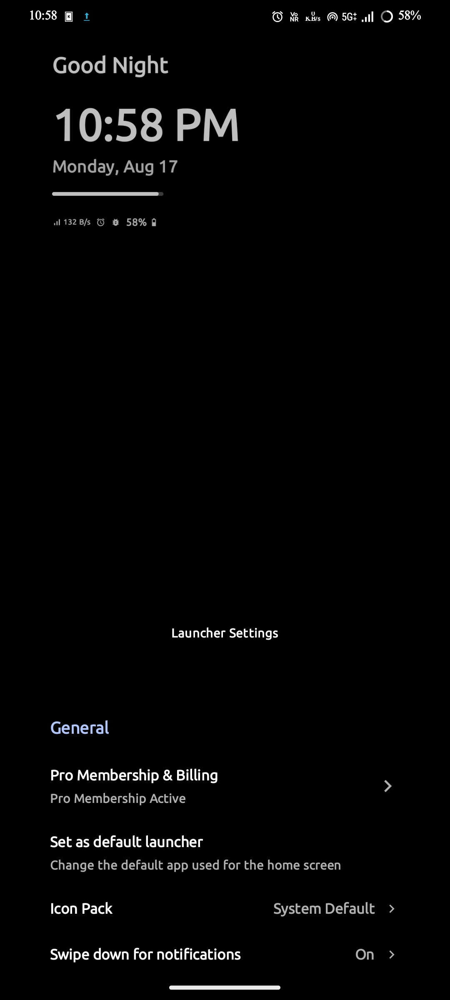
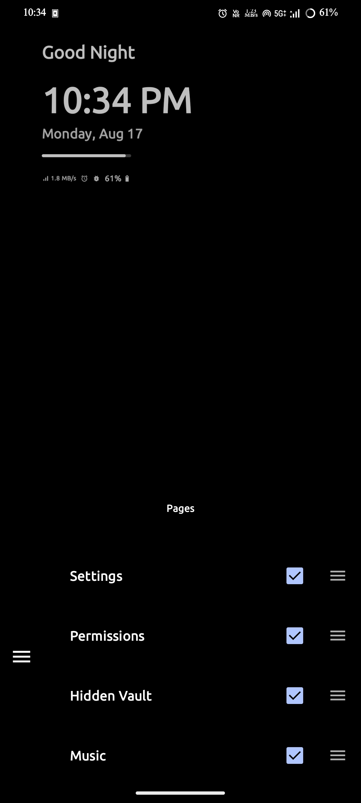

Space Launcher documentation
Everything you need to set up and get the most out of Space Launcher.
Install & first launch
Space Launcher is a design-oriented launcher where the wallpaper is your home screen. Instead of an icon grid, everything — clock, widgets, shortcuts — is layered on top of it in a compact, gesture-first layout. Because every layer is customizable, the initial setup takes a few extra minutes. But once you've configured it, daily use becomes second nature: everything you need is one swipe away.
Heads up: Space Launcher doesn't follow the traditional launcher model — there's no icon grid on the home screen, no familiar app shortcuts. The wallpaper fills the entire screen, and a swipe up reveals the hidden space where all your apps and pages live. It feels different at first, but that's by design. Give it a few days, and the compact layout will start to feel natural.
Install the app. Open the Play Store listing and tap Install.
Follow the documentation for navigation and setup guidance.
Set as default launcher
Once you've found the Launcher Settings page (see Navigating the app), you can either set it from there, or through Android Settings:
Open Settings → Apps → Default apps (the path varies by manufacturer — on some phones it's Apps → Home app).
Choose Space Launcher.
Press Home — you'll now land on your new launcher.
You can also do this from inside the app: open the Launcher Settings page in the hidden space (see Navigating the app), then tap Set as default launcher.
Pages
Pages are the individual screens inside the hidden space. Each page serves a specific purpose — from your app drawer to music controls to settings. The available pages are: Drawer, Widgets, Music, Notifications, Search, Favourites, To-Do, Games, Hidden Vault, Launcher Settings, Permissions, and About.
Navigating between pages
- Standard mode (default) — vertical swiping between pages. Drag the page icon on the left up or down to move between pages. The icon can be placed on the right side for left-handed use — toggle this in Launcher Settings → Cards & Layout → Carousel Position.
- Card mode — horizontal swiping through pages. Swipe left or right to move between pages.

Standard mode
Card modePage Manager
The Page Manager is a master page that controls which pages appear in the hidden space and in what order. Each page has a checkbox to toggle it on or off, and a drag handle to rearrange its position.

Page ManagerUse the Page Manager to keep only the pages you need — the hidden space stays exactly the set of pages you want.
Launcher Settings
Open the Launcher Settings page from the hidden space to customize every aspect of Space Launcher. Settings are grouped into six areas.
General
- Pro Membership & Billing — manage your subscription. displays available plans and the current status of your membership.
- Set as default launcher — make Space Launcher your home screen. Opens the system default-app picker.
- Icon Pack — Space Launcher supports all icon packs available on the market. Apply any icon pack to automatically unify your app drawer, and manually assign specific icons from the pack to any app for full customization.
- Swipe down for notifications — pull down the system notification panel by swiping anywhere on the home screen.
- Audio Visualizer — choose between Off, Subtle Glow, or Aurora Borealis. An animated glow appears in the hidden space while audio is playing. Note: this is a visual effect only — Android does not allow real-time audio recording for third-party apps.
Quick Search Launch
- Key Shortcuts — long press any key on the search page keyboard to assign an app, contact, or shortcut to it. Shortcuts can also be configured directly by long pressing keys on the search page.
Wallpaper & Background
- Wallpaper — set your home screen wallpaper from the gallery.
- Wallpaper Color — apply a solid color from the predefined palette as your wallpaper.
- Wallpaper Dimming — dims the wallpaper by 50% for improved contrast and readability.
- Wallpaper Gradient — applies a black transparent linear gradient from the bottom of the wallpaper upward.
- Wallpaper Dual Shade — segregates the wallpaper and hidden space into two distinct color zones, available in organic curve or rectangle shapes.
- Wallpaper Shadow — applies a drop shadow to the wallpaper area when swiped up into the hidden space.
Tip: Combine Dimming + Gradient + Shadow Color with a busy wallpaper for the cleanest, most readable home screen.
Cards & Layout
- Bottom Card Layout — toggle between standard mode (vertical swiping) and card mode (horizontal swiping) for navigating pages.
- Carousel Position — (standard mode only) place the page navigation icon on the left or right side of the screen.
- Card Color — (card mode only) customize the card background color.
- Card Shadow — (card mode only) drop shadow on the card.
- Card Emboss — (card mode only) makes the card look elevated from the hidden space.
- Hidden Space Color — (both modes) change the hidden space background color.
Visual Depth Effects
- Glass Cards — when enabled, widgets on the home screen are displayed inside translucent glass-like cards.
- Depth Effect — when enabled with a depth time or depth text widget active, the built-in visual processing separates the wallpaper foreground from the background to create a true dimensional effect.
- Depth Shadow — adds a shadow to the foreground object in the wallpaper when the depth effect is active.
- Parallax Effect — adds subtle depth motion to the wallpaper and cards on swipe, active when the depth effect is enabled.
- Hide Status Bar — hides the system status bar on the home screen for a cleaner, more immersive look.
- Auto Hide Inactive Media/Notifs — automatically hides the music and notification widgets when they have no data to display.
Appearance & Themes
- Top Info Font — the typeface for the top info area (time, date, greeting, day progress).
- Alignment — the top info area and depth widgets support vertical and horizontal alignment control.
- Downloadable Fonts — add new fonts from the font store (Pro).
App Drawer & Focus
- App Grid — switch between grid and list views in the app drawer. This also affects the Favourites page.
- Hide App Names — hide app labels in the app drawer and Favourites page for a cleaner look.
- Show Work Profile Apps — when a work profile is set up, display work profile apps in the app drawer.
- Close Hidden Space on Launch — when an app is launched, the shrunken wallpaper performs a pull-down animation before the app opens.
- Mindful Pause Apps — add apps that require mindful pause before opening.
- Mindful Pause Free Time — set a daily usage threshold for mindful apps. Exceeding it triggers a lockout period.
Typography
- Global Font Family — the primary typeface used across the launcher. Supports 1900+ fonts.
- Depth Time Font — the typeface for the depth time widget. Supports 1900+ fonts.
- Depth Text Font — the typeface for the depth text widget. Supports 1900+ fonts.
Settings marked with a lock icon are Pro features. Tapping them shows a toast message.
Widgets
Widgets live in two places: the basic widgets on the home screen, and the dynamic widgets on the Widgets page inside the hidden space.
Basic Widgets
- Time — the depth time widget displayed on the home screen.
- Date — the current date displayed below the time.
- Greetings — a personalized greeting message. You can add your name (max 15 characters).
- Day Progress — a progress bar showing how much of the day has elapsed.
- Status Bar Icons — system status indicators (battery, network, etc.) displayed on the home screen.
All basic widgets support both vertical and horizontal alignment for flexible placement.
Depth widgets
- Depth Time — a dimensional time widget with built-in visual processing. Customizable in font, size, and alignment.
- Depth Text — a dimensional text widget with built-in visual processing. Customizable in font, size, and alignment.
Both depth widgets support vertical and horizontal alignment and can be resized to fit your preferred layout.
Quick widgets
- Dynamic widgets — a swipeable collection of functional widgets: To-Do, Music Player, Speed Dial, Habit Tracker, Quick Launch, Agenda, Quick Settings, Smart Suggestions, Weather, and System widgets. Swipe horizontally with one widget per page. When you swipe up, they displace and fade so the wallpaper stays clean and the hidden space has room to unfold.
- Notification icons — when enabled, displays active notification icons just above the navigation bar for a quick glance.
- Left Quick — a quick-launch slot on the left side of the home screen. Configure with apps, shortcuts, or contacts for direct launch.
- Right Quick — a quick-launch slot on the right side of the home screen. Configure with apps, shortcuts, or contacts for direct launch.
Widget configuration
Dynamic widgets: When Dynamic Widgets is enabled, a + icon appears at the bottom of the home screen. Tap it to add your own app widgets to the dynamic carousel. To remove a widget, long-press it. Swipe to browse and add new widgets to the carousel.
Quick launch widgets: Left Quick and Right Quick each show a + icon at the bottom of the home screen. Tap it to add a new app, contact, or shortcut. Long-press again to reconfigure or replace the item.
All quick widgets support vertical alignment.
Tip: The Weather widget needs either location permission or a manually entered city name. Everything else works fully offline.
Favourites
A dedicated page for your most-used apps, contacts, and shortcuts — all in one place.
- Apps — add any installed app for instant access.
- Contacts — add people you reach out to most often.
- Shortcuts — add system shortcuts or launcher actions.
Favourites supports both grid and list display modes.
App Drawer
The app drawer shows a list of all installed apps. Long-press any app to manage it.
- Change icon — long-press an app to manually assign a different icon from your icon pack.
- Uninstall — long-press an app and select Uninstall to remove it.
- App Info — long-press an app and select App Info to open the system app settings.
Contacts
A dedicated page showing your contacts list. Tap a contact to directly call or message them.
- Call — tap a contact to initiate a phone call.
- Message — tap a contact to send a text message.
Permissions
A dedicated page listing every permission the launcher uses and why. Space Launcher is "On-Device First". No data is collected, transmitted, or sold. Permissions are optional and only power the feature they belong to.
- Contacts — search and dial contacts from the launcher (Speed Dial, Favourites, Left/Right Quick).
- Notification access — powers media controls, the audio visualizer, and the Notifications widget.
- Calendar — renders the Agenda widget with your upcoming events and meetings.
- Send notifications — shows Mindful Pause and other launcher notifications.
- Bluetooth — reads the current adapter status (On/Off) to update the Quick Settings tile. Space Launcher does not scan for, track, or connect to nearby Bluetooth devices.
- App usage stats — powers Smart Suggestions and Mindful Pause usage projections.
- Storage / Media — custom wallpaper and app icons.
Internet permission: Used only for downloading custom fonts and fetching weather data. Everything else works fully offline.
You can revoke any permission at any time in Android Settings. See the Privacy Policy for full details.
Music
A dedicated page showing the currently playing track with full playback controls.
- Now playing — displays the current track title, artist, and album art.
- Playback controls — play, pause, skip forward, and skip back.
- Progress bar — shows elapsed time and total duration. Scrub to seek.
To-Do
A simple task list with reminders. Add tasks, set a reminder time, and stay on track.
- Add tasks — create new to-do items directly from the To-Do page.
- Reminder time — set a reminder for each task so you don't forget.
- Complete tasks — mark tasks as done when finished.
Search
A full-featured search page with QWERTY and dial pad modes. Search for apps, contacts, shortcuts, settings, and launcher settings all in one place.
- QWERTY keyboard — type to search across apps, contacts, shortcuts, settings, and launcher settings.
- Dial pad — switch to dial pad mode for quick number input and contact search.
- Long-press to quick launch — long-press a result to directly launch an app, contact, or shortcut.
Games
Built-in, lightweight, offline games you can play without leaving the launcher.
- Snake — the classic.
- Tic-Tac-Toe — a quick match.
To exit a game, long-press the center restart icon.
Notifications
A dedicated page showing all your active notifications. Read and reply without leaving the launcher.
- Active notifications — view notifications from all your apps in one place.
- Read & reply — open, read, and reply to messages directly from the Notifications page.
Mindful Pause
A gentle intervention that shows you the real cost of your screen habits before you open a distracting app.
Go to Settings → App Drawer & Focus → Mindful Pause Apps and select the apps you want to slow down.
Set Mindful Pause Free Time — your daily usage threshold for those apps.
When you open a mindful app, a 30-second timer appears showing your usage stats and projections. A disclaimer tells you how much time will be blocked if you exceed your threshold. Choose to continue or step back.
Mindful Pause works entirely on-device using local usage statistics — nothing is uploaded.
Data & privacy
Space Launcher never collects, transmits, or sells your data. Everything stays on your device.
The only time Space Launcher connects to the internet is for two optional features: downloading custom fonts and fetching weather data. Nothing else requires a network connection.
See the Privacy Policy for full details.